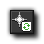
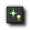
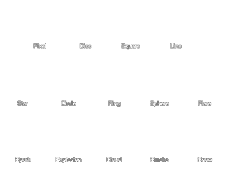
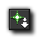

The extras tab is dedicated mainly to the creation and use of
Particles in your game, but there is one other action at the
bottom which we will describe first before going into a bit more
depth about particles.
Set Mouse
Cursor
This function allows you to set the cursor for the game to a sprite
that you can choose from the resource tree. You are also given the
option to hide the standard mouse cursor as well. This
functionality is only valid for Windows, Linux (Ubuntu), MacOS and
HTML5 targets.
Now, above that one we have a whole host of actions related to
creating particle systems, types and emitters... but, what is a
particle? Basically, a particle is a graphics resource which is
created with a base set of properties set by you beforehand. Unlike
objects, backgrounds and tiles, once a particle has been created
you no longer have any control over it and it will continue to
exists until it reaches the end of its "life", which is defined by
you using these actions. You can also define its colour, speed,
direction and if it will be affected by gravity or not, as well as
how many of them you want to be created and how often. As particles
are purely graphical, they are also very fast to process and you
can have lots of them on screen at any one time with no noticeable
lag, making them ideal for many special effects, like smoke trails,
blood splatters and debris. Below you can find a list of all the
actions available to create a particle system and define types and
emitters.
Particle
System Create
Before you can create any particles, you have to create the
"system" that they are created in. This action will create that
system and ask you for the depth that any particles you create will
be drawn at. As with objects and tiles, this depth can be a
positive or a negative integer, with a high negative value placing
it "above" other things and a high positive value placing it
"below".
Particle System Destroy
Particle systems take up memory space and if they are not managed
properly, they can slow down and even crash your game. To prevent
this you must destroy them when not in use with this action.
Normally it would go in the destroy event of the object that has
the Particle System Create action, or in the room end event
if there is nothing going to destroy it sooner (or even both
events).
Particle System Clear
This action will clear a system of all particles in it making all
those that are visible on the screen disappear. This does
not destroy the particle system, nor the particles and
emitters, it only clears the screen until more particles are
emitted.
Particle Type Create
Before you can see any particles in a system, they have to be
created and defined, first with this action, and then (if
necessary) with the other actions listed below. In this action you
are able to specify the name of the particle (type0 - type15), and
choose whether to use your own custom sprite or one of the included
particles which are shown in the image below:  You then have the options
"min size" and "max size" which enable you to set a minimum and a
maximum initial size for your particle. All this means is that your
particles will be created a random size within these limits that
you set and if you want them all to be the same size then set both
parameters to the same value. Finally there is the "size increment"
option which enables you to specify whether you wish a particle to
grow (positive number) or shrink (negative number) after it has
been created on the screen. Normally this value is kept pretty low,
0.1 or -0.05 for example.
Particle colour
With this action you can set the colours of the particles as well
as the alpha (transparency, with 1 being fully opaque and 0 being
fully transparent) and how the colours are to be used, either
fading over the life of the particle from colour1 to colour2
(changing) or having each particle choose a permanent colour from
those specified (mixed). Note that "alpha" has a start and end
value so you can make particles fade out or in over their lifetime
on the screen.
Particle Life
The lifetime of a particle is the time it takes, in steps, from the
moment it is created to the moment it disappears from the screen.
With this action you specify the particle and a minimum and maximum
lifetime or your particles, with each individual particle having a
life somewhere within that range. If you wish them all to have the
same lifetime then set both values to be the same.
Particle Speed
This action not only sets the speed of the particle but also its
direction and whether or not it is affected by friction (causing it
to slowdown over time). As with all other particle actions, you
must first select a particle type for the action to work on and
then set the maximum and minimum speeds for the particles to be
created with. Finally you set a directional range too, based on the
standard GameMaker: Studio angles system, with 0 being
right, 90 up, 180 left and 270 down and you can also set the
friction for your particle (normally a small value like 0.05).
Particle Gravity
Particles can be affected by gravity too, so with this action you
can select the particle type it has to affect and also the amount
and the direction that it should "pull". The direction is based on
the standard GameMaker: Studio angles system, with 0 being
right, 90 up, 180 left and 270 down.
Particle Secondary
This action allows you to tell a particle to emit other particles
at different times. The options are outlined below:
Create Emitter
Once you have created your particle you will want to see it in the
room, and when using actions the only way to do that is to use an
emitter. An emitter is just another part of the particle system
whose sole purpose is to emit particles based on the parameters
that you have defined for it. These parameters are the name (id) of
the emitter, the shape of the emitter (an ellipse or a rectangle)
and the coordinates within the room of the emitter. The
coordinates are defined by four parameters, and xmin and an xmax,
and a ymin and a ymax, so for example, if you want to emit
particles over your whole room you would have the xmin equal 0, the
xmax equal the room width and the ymin equal 0 and the ymax equal
the room height.
Destroy Emitter
Like other things in a particle system, emitters take up memory and
when one is no longer needed it should be destroyed using this
action.
Burst
From Emitter
Particles can be either burst or streamed from an emitter, which
means that they are all created at once (burst) or they are created
over a set number of steps (streamed). This action controls the
bursting of particles and should be placed in any event where you
need to create a group of particles at once (like in a mouse button
event, for example). You choose the emitter to use, the particle
type to burst and the number of those particles that should be
emitted. Note too that you can use a negative number for the amount
of particles to burst, which means that, for example, if you have a
value of -10 then there is a one in ten chance that a particle will
be emitted.
Stream From Emitter
Particles can be either burst or streamed from an emitter, which
means that they are all created at once (burst) or they are created
over a set number of steps (streamed). This action controls the
streaming of particles and should only normally be used once in any
instance. You choose the emitter to use, the particle type to
stream and the number of those particles that should be emitted
every step of the game while the emitter exists. Note too
that you can use a negative number for the amount of particles to
stream, which means that, for example, if you have a value of -10
then there is a one in ten chance that a particle will be emitted
each step.